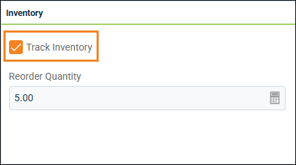
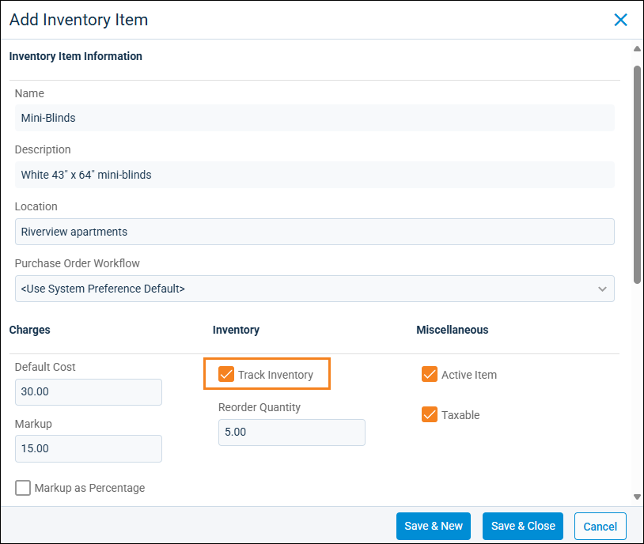
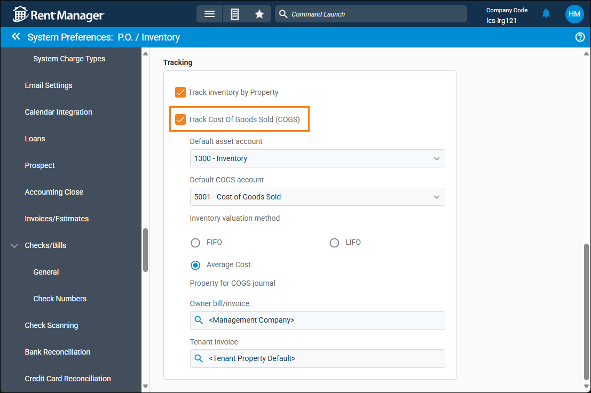
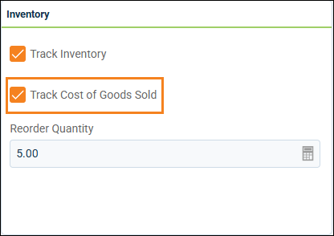
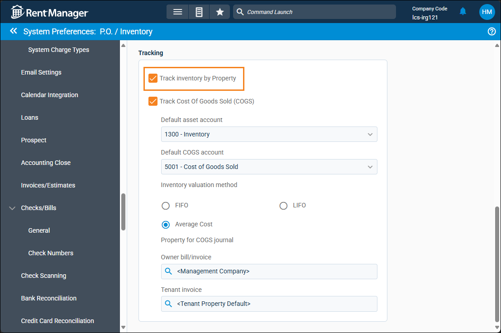

Source: https://rmxhelp.rentmanager.com/Topics/Express/KB/Inventory-Items-Track.htm
Set Up Tracking for Inventory Items
Efficient inventory control starts with tracking your inventory items, which allows you to view the quantity of an item at any time. An inventory item is designated as being tracked when, on the Inventory Item details page, the Track Inventory field is checked.
Tracked items include purchased products and parts which are kept in stock and tracked (counted). You can also flag these items for reorder when the quantity falls below a specified amount. Items kept in stock are considered a current asset on the Balance Sheet. Items that do not need to be tracked are any services or products that don't have a tracked quantity, such as labor costs for services offered to tenants and owners like plumbing, cleaning, and painting.
When you track items, Rent Manager does the following for you:
-
Tracks the number of items in stock and automatically adjusts the item quantities by increasing the quantity when items are received via a purchase order and decreasing when items are issued via a service issue or invoice.
-
Automatically updates an item's status based on specific criteria (out of stock, needs to be reordered, and so on).
Rent Managercan also calculate the Cost of Goods Sold (COGS) for any tracked inventory items. Doing so results in the creation of journal entries every time bill and invoice links are created in work orders that involve COGS-enabled items. These journals affect the asset and COGS expense account assigned to the inventory item.
Enable Tracking for Inventory Items
There are two different ways to enable tracking on specific inventory items. You can enable tracking as you create the item in Rent Manager, or you can open an existing item's details and enable tracking for that item at any time.
Option 1: Enable Tracking on an Existing Item
Related Privileges
| Group | Privilege | Column |
|---|---|---|
| Sales/Invoicing | Inventory Transactions | View |
| Items | View, Edit |
For more information, refer to Control User Access.
To track an existing inventory item from its details page, do the following:
-
Go to
 arrow_forward Accounting arrow_forward General arrow_forward Inventory Items and select an item from the list.
arrow_forward Accounting arrow_forward General arrow_forward Inventory Items and select an item from the list.
The Inventory Item details page displays. -
On the Inventory tile, check the Track Inventory box.

-
In the Reorder Quantity field, enter a number to indicate when more of the item needs to be purchased. When the quantity of this item becomes less than the value specified here, the status of the item changes to Reorder on the Inventory Items page. For more information, refer to Inventory Item Details (Page).
-
Click Save.
Rent Manager now tracks inventory for this item.
Option 2: Enable Tracking on a New Item
Related Privileges
| Group | Privilege | Column |
|---|---|---|
| Sales/Invoicing | Inventory Transactions | View |
| Items | Add, View |
For more information, refer to Control User Access.
To track inventory for new items you are adding to Rent Manager, do the following:
-
Go to
arrow_forward Accounting arrow_forward General arrow_forward Inventory Items.
The Inventory Items page displays. -
Click
 Add Inventory Item.
Add Inventory Item.
The Add Inventory Item pop-up displays. -
In the Inventory column, check Track Inventory.

-
In the Reorder Quantity field, enter a number to indicate when more of the item needs to be purchased. When the quantity of this item becomes less than the value specified here, the status of the item changes to Reorder on the Inventory Items page. For more information, refer to Add an Inventory Item.
-
Click Save.
Rent Manager now tracks inventory for this new item.
Enable Tracking for COGS
If you have inventory items that you keep on hand to sell to tenants or owners, then these items are considered assets on the Balance Sheet until you sell them. The accounting practice of Cost of Goods Sold (COGS) removes inventory from the Balance Sheet when they're sold by posting an expense on the Profit & Loss. When COGS is enabled on an inventory item, Rent Manager creates a journal entry to record COGS when the inventory item is sold. To track COGS on individual items, you first need to enable COGS tracking in system preferences.
Step 1: Enable COGS Tracking
Related Privileges
| Group | Privilege | Column |
|---|---|---|
| System | System Preferences | View, Edit |
For more information, refer to Control User Access.
To enable tracking of COGS for inventory items, do the following:
-
Go to
arrow_forward  Administration, then go to .
Administration, then go to .
The System Preferences: P.O./Inventory page displays. -
In the Tracking section, check Track Cost of Goods Sold.

-
Enter information into the available fields.
Option Description Default asset account
The asset general ledger (GL) account that is used to show the value of inventory items on hand.
More Information
The default asset account should be an Other Current Asset type account. To track the inventory value of each item individually, it is recommended that you create a separate asset account for each item, as subaccounts of this default account.
Default COGS account
The expense GL account that is used to track the Cost of Goods Sold.
Inventory valuation method
The method that is used to determine how COGS is calculated:
Warning
COGS is calculated based on the Inventory Valuation method selected in system preferences. The IRS considers inventory valuation method as a material business practice, so please consult your accountant to ensure you select the appropriate valuation method for your business.
FIFO
First In, First Out (FIFO) calculates COGS by assuming the oldest inventory is sold first. For example, you bought 10 light bulbs in January for $3/each and 15 more in March for $3.50/each and then in April sold 20 to your tenants. Rent Manager calculates your COGS using the cost of the first 10 light bulbs you bought in January ($3) for the first 10 you sold, and then uses the cost of the next oldest inventory you bought in March ($3.50) for the next 10 you sold, bringing your total COGS expense to $65.00.
Cost of first 10 light bulbs: 10 * $3.00 = $30.00
Cost of next 10 light bulbs: 10 * $3.50 = $35.00
Total COGS for 20 light bulbs: $30 + $35 = $65.00
LIFO
Last In, First Out (LIFO) calculates COGS by assuming the newest inventory is sold first. For example, you bought 15 light bulbs in January for $3/each and got 10 more on sale in March for $2/each and then in April sold 20 to your tenants. Rent Manager calculates your COGS using the cost of the last 10 light bulbs you bought in March ($2) for the first 10 you sold, and then uses the cost of the next newest inventory you bought in January ($3) for the next 10 you sold, bringing your total COGS expense to $50.00.
Cost of last 10 light bulbs: 10 * $2.00 = $20.00
Cost of next 10 light bulbs: 10 * $.300 = $30.00
Total COGS for 20 light bulbs sold: $20+ $30 = $50.00
Average Cost
Calculates COGS using the average cost of all of the items on hand and values them at that mean price. For example, over the course of several months, you made multiple light bulb purchases that totaled to 35 light bulbs for a combined cost of $100 and then sold 20 of them to tenants. Rent Manager calculates COGS using the average cost of the light bulbs ($2.86) for all 20 of the light bulbs sold, bringing your total COGS expense to $57.20.
Average cost of all light bulbs: $100 / 35 = $2.86
Total COGS for 20 light bulbs sold: 20 * $2.86 = $57.20
Property for COGS journal
The property that is linked to the journal entry created for the following COGS bill or invoice links:
More Information
Only properties to which you have access display. Your access to properties can be managed from your user account or on the property's details page. For more information, refer to Limit Access to a Property.
Owner bill/invoice
When a bill or invoice involving inventory items with COGS enabled is linked to an owner, the property that is used in the corresponding journal entry.
Tenant invoice
When an invoice involving inventory items with COGS enabled is linked to a tenant, the property that is used in the corresponding journal entry.
-
Click Save to confirm your changes.
COGS tracking is enabled in Rent Manager at the system level.
Step 2: Enable Item-Specific COGS Tracking
Related Privileges
| Group | Privilege | Column |
|---|---|---|
| System | System Preferences | View, Edit |
For more information, refer to Control User Access.
To enable COGS tracking for a specific inventory item, do the following:
-
Go to
arrow_forward Accounting arrow_forward General arrow_forward Inventory Items and select an item from the list.
The Inventory Item details page displays. -
On the Inventory tile, check the Track Cost of Goods Sold box.

-
Click Save.
Rent Manager now tracks the COGS for this inventory item.
Enable Inventory Tracking by Property
Related Privileges
| Group | Privilege | Column |
|---|---|---|
| System | System Preferences | View, Edit |
For more information, refer to Control User Access.
Inventory item quantities update in real time as Rent Manager processes invoices and purchase orders. Stock is automatically increased when items are received via a purchase order and automatically decreased when items are issued via an issue or invoice. However, there may be situations that require you to decrease an inventory item's stock at one property and increase the same inventory item's stock at a different property. For example, you may find it necessary to transfer inventory to a new property if you are no longer managing a property or need to split up inventory so that all of your properties have a specific amount.
In order to transfer the assignment of inventory items from one property to another property, you need to enable the system preference to track inventory by property.
To enable inventory tracking by property, do the following:
-
Go to
arrow_forward Administration, then go to .
The System Preferences: P.O./Inventory page displays. -
In the Tracking section, check Track Inventory by Property.

-
Click Save.
Tracking inventory by property is now enabled, meaning you can transfer the assignment of inventory items from one property to another. For more information, refer to Transfer Inventory Between Properties.